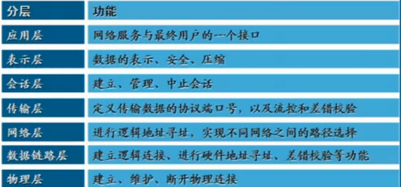
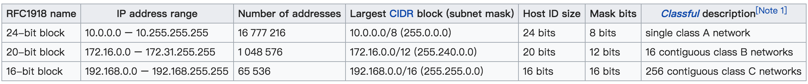
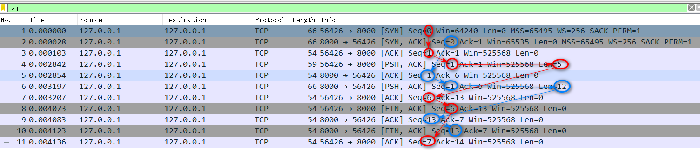
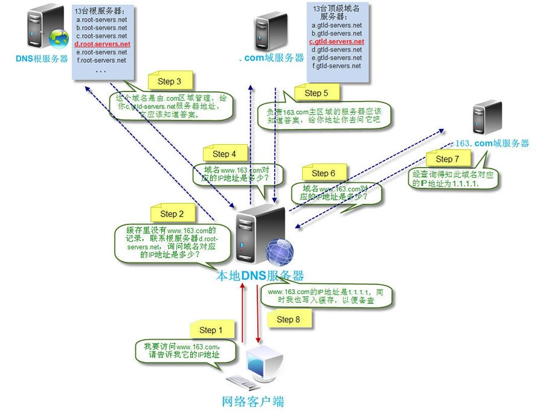

网关
对于局域网来说，上网需要路由器，路由器可以被称为网关。
网关还能承载DNS服务器的作用。
1. OSI七层模型
**Open System Interconnection****适用于所有的网络
分工带来效能
将复杂的流程分解为几个功能相对单一的子进程
整个流程更加清晰，复杂问题简单化
更容易发现问题并针对性的解决问题
应用层(Application) 提供业务处理的，比如网络与用户应用软件之间的接口服务(HTTP)
表示层(Presentation) 内容是什么格式（英文还是中文，还是二进制等等）表示的，这一层提供格式化的表示和转换数据服务，如加密和压缩()
会话层(Session)保持会话， 提供包括访问验证和会话管理在内的建立和维护应用之间通信的机制()
传输层(Transimission) 提供建立、维护和取消传输连接功能，负责可靠地传输数据(TCP)
网络层(Network) 处理网络间路由，确保数据及时传送(路由器)
数据链路层(DataLink) 负责无错传输数据，确认帧、发错重传等(交换机)
物理层(Physics) 提供机械、电气、功能和过程特性(网卡、网线、双绞线、同轴电缆、中继器)
解析：
拿张稿纸写封信 （应用层，表示层，会话层先合并为一层， 写信整体对应的是应用层，里面放的业务数据）
把信装到信封里面，写上收件人，收件人地址（地址分为两部分，第一部分，省市区地址和楼盘门牌号。第二部分是房间号） 然后给邮局，一般邮局不会只打包一封信，而是把一些相同目的地的信封打包成包裹，然后写上目标地址（这个打包的过程对应的是传输层）
邮局送信，先找到具体楼盘以及门牌号。邮局（寻址，这里对应的是网络层）知道目的地了，开始选择道路（铁路或者公路或者飞行）。
确定位置和运输方式之后，开始传输，到达目的地之后。把数据包给到收件人，收件人拆开数据包。拿到信（数据）（这个层是数据链路层和物理层负责，物理层负责实际的物理传输，就010101的传信号），万一途中把包裹丢失了怎么办，以及其他意外的处理，比如包裹的包装是否被拆过。都需要校验。（这个是数据链路层负责的事情 ）
1 | 下层是为上层提供服务的 |
物理层
建立，维护，断开物理连接
数据最终还是需要物理层的硬件传输，这些硬件只能传输010101.这些01010 在网络中怎么去表示呢。不同的介质表现方式是不一样的。
- 高电频和低电频表示，5V 和 0V分别表示 1 和 0；
1.1 数据链路层
建立逻辑连接，进行硬件地址寻址·差错校验等功能。
比如两个网卡，这两张网卡如何建立连接，如何通信。通信过程中出问题了如何解决。发送过程中丢包要重新传。链路层依赖物理层，（下层是为上层提供服务的，上层会把数据传给下层，让下层帮忙提供服务）
1.2 网络层
进行逻辑地址寻址，实现不同网络之间的路径选择
从一个端到另一个端，肯定不止一条路。而是有无数条路。那要如何找到最快的路呢。这个是网络层负责的
1.3 传输层
定义传输数据的协议端口号，以及流控和差错校验（在不可靠的路线上做可靠的事情）
从一个端向另外一个端发送数据包的时候，如何做到中间丢包了，发送端能够感知到。一般操作方式是，当发送端发送包之后，开一个定时器。一般发送一个数据包，会有一个经验的时间。比如A到B之间传数据包要2秒，那么这个定时器2秒之后还没回来，我就默认这个包丢了。那就重新传一份。直到接受端返回正确的回馈。
1.4 应用层表示层会话层
应用层，表示层，会话层一般会打包到一层，就是实际的数据，比如发送的是文本，图片还是网页等这些东西。下层帮上层提供服务，上层给下层下发命令。下层帮忙处理。
1.5 分层模型

1.6 封装过程


- 数据在不同层的称谓
数据帧（Frame） 是一种信息单位，它的起点和目的点都是数据链路层
数据包（Packet）：也是一种信息单位，它的起始和目的地是网络层
段（Segment）： 通常是指起始点和目的地都是传输层的信息单元
消息（message）： 是指起始点和目的地都在网络层以上（经常在应用层）的信息单元
不同的层解自己的封装的数据（段，数据包，数据帧等等）
2. TCP/IP参考模型
TCP/IP是传输控制协议/网络互联协议的简称
早期的TCP/IP模型是一个四层结构，从下往上依次是网络接口层、互联网层、传输层和应用层
后来在使用过程中，借鉴OSI七层参考模型，将网络接口层划分为了物理层和数据链路层，形成五层结构

- 5层对应7层
应用层对应 （应用层，表示层和会话层）
传输层对应传输层
网络层对应网络层
数据链路层对应数据链路层
物理层对应物理层
2.1 协议的概念和作用
协议的目的为了让计算机能够通信，计算机需要定义通信规则，这些规则就是协议，信息双方都要理解，而且信息能够传输。
规则是多种，协议也有多种
协议就是数据封装格式+传输 的结合
2.2 常用协议
TCP/IP协议被称为传输控制协议/互联网协议，又称网络通讯协议
是由网络层的IP协议和传输层的TCP协议组成，是一个很大的协议集合
物理层和数据链路层没有定义任何特定协议，支持所有的标准和专用的协议

| 层级 | 名称 | 含义 |
|---|---|---|
| 应用层 | HTTP | 超文本传输协议（HTTP，HyperText Transfer Protocol)是互联网上应用最为广泛的一种网络协议 |
| 应用层 | FTP | 文件传输协议（英文：File Transfer Protocol，缩写：FTP）是用于在网络上进行文件传输的一套标准协议，使用客户/服务器模式 |
| 应用层 | TFTP | (Trivial File Transfer Protocol,简单文件传输协议)是TCP/IP协议族中的一个用来在客户机与服务器之间进行简单文件传输的协议 |
| 应用层 | SMTP | 简单邮件传输协议 (Simple Mail Transfer Protocol, SMTP) 是在Internet传输Email的事实标准 |
| 应用层 | SNMP | 简单网络管理协议（SNMP，Simple Network Management Protocol），由一组网络管理的标准组成，包含一个应用层协议（application layer protocol）、数据库模型（database schema）和一组资源对象,该协议能够支持网络管理系统，用以监测连接到网络上的设备是否有任何引起管理上关注的情况。 |
| 应用层 | DNS | 域名系统（英文：Domain Name System，缩写：DNS）是互联网的一项服务。它作为将域名和IP地址相互映射的一个分布式数据库，能够使人更方便地访问互联网。 |
| TCP | TCP（Transmission Control Protocol 传输控制协议）是一种面向连接的、可靠的、基于字节流的传输层通信协议 | |
| 传输层 | UDP | UDP 是User Datagram Protocol的简称， 中文名是用户数据报协议，是OSI（Open System Interconnection，开放式系统互联） 参考模型中一种无连接的传输层协议，提供面向事务的简单不可靠信息传送服务 |
| 传输层 | ICMP | ICMP（Internet Control Message Protocol）Internet控制报文协议。它是TCP/IP协议簇的一个子协议，用于在IP主机、路由器之间传递控制消息。控制消息是指网络通不通、主机是否可达、路由是否可用等网络本身的消息 |
| 网络层 | IGMP | Internet 组管理协议称为IGMP协议（Internet Group Management Protocol），是因特网协议家族中的一个组播协议。该协议运行在主机和组播路由器之间 |
| 网络层 | IP | 互联网协议地址（英语：Internet Protocol Address，又译为网际协议地址），缩写为IP地址（英语：IP Address），是分配给用户上网使用的网际协议（英语：Internet Protocol, IP）的设备的数字标签 |
| 网络层 | ARP | 地址解析协议，即ARP（Address Resolution Protocol），是根据IP地址获取物理地址的一个TCP/IP协议 |
| 网络层 | RARP | 反向地址转换协议（RARP：Reverse Address Resolution Protocol） 反向地址转换协议（RARP）允许局域网的物理机器从网关服务器的 ARP 表或者缓存上请求其 IP 地址 |
以下具体讲5层协议
3. 网络接口层
网络接口层是TCP/IP模型的最底层，负责接收从上一层交来的数据报并将数据报通过底层的物理网络发送出去，比较常见的就是设备的驱动程序，此层没有特定的协议
网络接口层又分为物理层和数据链路层
3.1 物理层
计算机在传递数据的时候传递的都是0和1的数字，而物理层关心的是用什么信号来表示0和1，是否可以双向通信，最初的连接如何建立以及完成连接如何终止,物理层是为数据传输提供可靠的环境
尽可能的屏蔽掉物理设备和传输媒介，使数据链路层不考虑这些差异，只考虑本层的协议和服务
为用户提供在一条物理传输媒体上提供传送和接收比特流的能力
需要解决物理连接、维护和释放的问题

3.1.1 数字信号的编码
数字信号的编码：用何种物理信号来表示0和1
3.1.1.1 非归零编码
缺点就是连音没法处理，是多个1 还是一个1的问题；所以需要告诉多长时间是个间隔呢。不然没法判断是几个1
优点： 编/译码简单。
缺点： 内部不含时钟信号， 收/发端同步困难。
用途： 计算机内部， 或低速数据通信。
3.1.1.2 曼彻斯特编码
附加一个从低到高或者从高到低的频率
优点：
内部自含时钟， 收/发端同步容易。
抗干扰能力强。
缺点：
编/译码较复杂。
占用更多的信道带宽， 在同样的波特率的情况下， 要比非归零编码多占用一倍信道带宽。
用途： 802.3局域网（以太网）使用场景更多
3.2 数据链路层
数据链路层是OSI参考模型中的第二层，介乎于物理层和网络层之间
数据链路层在物理层提供的服务的基础上向网络层提供服务，其最基本的服务是将源自网络层来的数据可靠地传输到相邻节点的目标机网络层
如何将数据组合成数据块，在数据链路层中称这种数据块为帧frame，帧是数据链路层的传送单位
如何控制帧在物理信道上的传输，包括如何处理传输差错，如何调节发送速率以使与接收方相匹配
以及在两个网络实体之间提供数据链路通路的建立、维持和释放的管理
3.2.1 以太网
以太网（Ethernet）是一种计算机局域网技术。IEEE组织的IEEE 802.3标准制定了以太网的技术标准，它规定了包括物理层的连线、电子信号和介质访问层协议的内容
以太网的标准拓扑结构为总线型拓扑
以太网仍然使用总线型拓扑和CSMA/CD（Carrier Sense Multiple Access/Collision Detection，即载波多重访问/碰撞侦测）的总线技术
以太网实现了网络上无线电系统多个节点发送信息的想法，每个节点必须获取电缆或者信道的才能传送信息
每一个节点有全球唯一的48位地址也就是制造商分配给网卡的MAC地址，以保证以太网上所有节点能互相鉴别
3.2.2 总线型拓扑（只用到了物理层和数据链路层）
- 网络总线，每个电脑都可以接受消息，发送消息。
总线型拓扑是采用单根传输作为共用的传输介质,将网络中所有的计算机通过相应的硬件接口和电缆直接连接到这根共享的总线上
使用总线型拓扑结构需解决的是确保端用户使用媒体发送数据时不能出现冲突。
总线型网络采用载波监听多路访问/冲突检测协议（CSMA/CD)作为控制策略
（CSMA/CD指的是，每个电脑得监听其他电脑的状态，大家不能同时往网络总线上发消息）
3.2.2.1 载波监听多路访问
全称Carrier Sense Multiple Access (CSMA)，是一种允许多个设备在同一信道发送信号的协议，其中的设备监听其它设备是否忙碌，只有在线路空闲时才发送
在此种访问方式下，网络中的所有用户共享传输介质，信息通过广播传送到所有端口，网络中的工作站对接收到的信息进行确认，若是发给自己的便接收否则不理
从发送端情况看，当一个工作站有数据要发送时，他首先监听信道并检测网络上是否有其他的工作站正在发送DATA，如果检测到信道忙，工作站将继续WAIT若发现信道空闲，则开始发送数据，信息发送出去后，发送端还要继续对发送出去的信息进行确认，以了解接收端是否已经正确接收到数据，如果收到则发送结束，否则再次发送
- 核心思想
先听后讲 信道空闲则发送，信道忙则等待。
边听边讲 发送信号时不断检测信道是否碰撞。（发信号时即时检测）
碰撞即停 （因为网线是单向的，传输过程中发现别人也在往反方向发，那么赶紧停止发送）
退避重传 二进制指数退避重传
多次碰撞，放弃发送,最多16次 （下面这个计算退避等待时间的算法，1，2，4，8.。。64） 如果64秒还没发出去，那么就不发了。
3.2.2.2 冲突检测
冲突检测即发送站点在发送数据时要边发送边监听信道，若监听到信道有干扰信号，则表示产生了冲突，于是就要停止发送数据，计算出退避等待时间，然后使用CSMA方法继续尝试发送
计算退避等待时间采用的是二进制指数退避算法 （发消息的时候，检测别的电脑是否也在发，如果有就等1秒，1秒后继续校验，如果阻塞继续等2秒，后面依次类推 等 2的次方倍）
3.2.2.3 总线拓扑的缺点
- 不安全，发送出去的包连接总线的所有电脑都能劫持到。本来不该他收的信息他也可以收。
3.2.2.4 交换机
后来出现了交换机，交换机是一个二层的设备，在物理链路层上工作。比如A电脑发送消息给B电脑，直接连接交换机即可。就不同通知同样连接交换机的C电脑
- 交换机和路由器的区别
首先交换机是一个数据链路层的设备，只是传输数据包。数据包里面肯定有原地址和目标地址（比如A电脑 -> B电脑）这个地址就是 MAC地址。
路由处理ip地址，主要作用是网络层的寻址
3.2.3 MAC地址
在通信过程中是用内置在网卡内的地址来标识计算机身份的
每个网卡都有一个全球唯一的地址来标识自己，不会重复(保证局域网之内不重复就行了)。MAC地址48位的二进制组成，通常分为6段，用16进制表示
3.2.4 以太网帧格式
在以太网链路上的数据包称作以太帧。以太帧起始部分由前导码和帧开始符组成。
后面紧跟着一个以太网报头，以MAC地址说明目的地址和源地址
帧的中部是该帧负载的包含其他协议报头的数据包(例如IP协议)
以太帧由一个32位冗余校验码结尾。它用于检验数据传输是否出现损坏
| 字段 | 说明 |
|---|---|
| 前导符(Preamble) | 由1和0交互构成(10101010…..)，共占7个字节，用于使PLS子层电路与收到的帧达成时钟同步 |
| 帧起始(Start-of-Frame Delimiter, SFD) | 为10101011，共占1个字节，表示一个帧的开始。它和前导符共同使接收方能根据1、0交替来迅速实现比特同步，当检测到连续的两位1时，将后续信息交给MAC子层。通常来说，Pre和SFD这两个字段只用于提醒接收端新帧到达，并不计入MAC帧大小，也不算作是MAC帧头的组成部分 |
| 目的MAC(Destination Address, DA)/源MAC(Source Address, SA) | 分别用于标识目的MAC地址和源MAC地址，两个字段各占6个字节。它们可以是单播地址也可以是广播地址。当地址的最高位为0时表示单播，最高位为1时为组播，全为1时为广播 |
| 长度(Length)/类型(Type) | 这是一个二选一的字段，共占2个字节，对于不同的网络协议，它有不同的含义。但是，作为类型使用时，如上表所示，最小值也总是大于1536（十六进制0x600）；所以不会产生冲突。另外，在IEEE 802.3中，数据字段的长度为38~1500个字节 |
| 数据(Data) | 该字段对于不同的以太网帧包含的内容不一，对于较老的以太网标准，它是网络层来的数据报；而较新的标准，则是一个LLC帧的全部内容 |
| 帧校验序列(FCS) | 它是一个包含32位CRC校验值的字段，一共占4个字节。由发送端对MAC帧的DA字段到Data字段间（不包含前导符和帧起始）的二进制序列进行计算 |
3.2.5 ARP协议
地址解析协议，即ARP（Address Resolution Protocol），
是根据IP地址获取物理地址(MAC地址)的一个TCP/IP协议主机发送信息时将包含目标IP地址的ARP请求广播到网络上的所有主机，并接收返回消息，以此确定目标的物理地址；收到返回消息后将该IP地址和物理地址存入本机ARP缓存中并保留一定时间，下次请求时直接查询ARP缓存以节约资源
地址解析协议是建立在网络中各个主机互相信任的基础上的，网络上的主机可以自主发送ARP应答消息，其他主机收到应答报文时不会检测该报文的真实性就会将其记入本机ARP缓存
由此攻击者就可以向某一主机发送伪ARP应答报文，使其发送的信息无法到达预期的主机或到达错误的主机，这就构成了一个ARP欺骗
3.2.5.1 ARP协议报文
| 字段 | 说明 |
|---|---|
| 硬件类型 | 表示硬件地址的类型，值为1表示以太网地址 |
| 协议类型 | 表示要映射的协议地址类型。它的值为0x0800表示IP地址类型 |
| 硬件地址长度和协议长度 | 以字节为单位，对于以太网上的IP地址的ARP请求或应答来说，他们的值分别为6和4 |
| 操作类型 | 用来表示这个报文的类型，ARP请求为1，ARP响应为2，RARP请求为3，RARP响应为4 |
| 发送端MAC地址 | 发送方设备的硬件地址 |
| 发送端IP地址 | 发送方设备的IP地址 |
| 目标MAC地址 | 接收方设备的硬件地址 |
| 目标IP地址 | 接收方设备的IP地址 |
3.2.5.2 ARP地址解析过程
主机A和B在同一个网段，主机A要向主机B发送信息
主机A首先查看自己的ARP表，确定其中是否包含有主机B对应的ARP表项。如果找到了对应的MAC地址，则主机A直接利用ARP表中的MAC地址，对IP数据包进行帧封装，并将数据包发送给主机B。
如果主机A在ARP表中找不到对应的MAC地址，则将缓存该数据报文，然后以广播方式发送一个ARP请求报文。ARP请求报文中的发送端IP地址和发送端MAC地址为主机A的IP地址和MAC地址，目标IP地址和目标MAC地址为主机B的IP地址和全0的MAC地址。由于ARP请求报文以广播方式发送，该网段上的所有主机都可以接收到该请求，但只有被请求的主机（即主机B）会对该请求进行处理。
主机B比较自己的IP地址和ARP请求报文中的目标IP地址，当两者相同时进行如下处理：将ARP请求报文中的发送端（即主机A）的IP地址和MAC地址存入自己的ARP表中。之后以单播方式发送ARP响应报文给主机A，其中包含了自己的MAC地址。
主机A收到ARP响应报文后，将主机B的MAC地址加入到自己的ARP表中以用于后续报文的转发，同时将IP数据包进行封装后发送出去。
4. 互联网层(网络层)
位于传输层和网络接口层之间,用于把数据从源主机经过若干个中间节点传送到目标主机,并向传输层提供最基础的数据传输服务,它要提供路由和选址的工作

4.1 选址
交换机是靠MAC来寻址的，而因为MAC地址是无层次的,所以要靠IP地址来确认计算机的位置,这就是选址


4.2 路由
寻址
在能够选择的多条道路之间选择一条最短的路径就是路由的工作
4.3 IP
在网络中，每台计算机都有一个唯一的地址，方便别人找到它，这个地址称为IP地址。
4.3.1 IP头部

| 字段 | 说明 |
|---|---|
| 版本 | Version）字段：占4比特。用来表明IP协议实现的版本号，当前一般为IPv4，即0100 |
| 首部长部 | 报头长度（Internet Header Length，IHL）字段：占4比特。是头部占32比特的数字，包括可选项。普通IP数据报（没有任何选项），该字段的值是5，即160比特=20字节。此字段最大值为60字节 |
| 优先级与服务类型 | 占8比特。其中前3比特为优先权子字段（Precedence，现已被忽略）。第8比特保留未用。第4至第7比特分别代表延迟、吞吐量、可靠性和花费。当它们取值为1时分别代表要求最小时延、最大吞吐量、最高可靠性和最小费用。这4比特的服务类型中只能置其中1比特为1。可以全为0，若全为0则表示一般服务。服务类型字段声明了数据报被网络系统传输时可以被怎样处理。例如：TELNET协议可能要求有最小的延迟，FTP协议（数据）可能要求有最大吞吐量，SNMP协议可能要求有最高可靠性，NNTP（Network News Transfer Protocol，网络新闻传输协议）可能要求最小费用，而ICMP协议可能无特殊要求（4比特全为0 |
| 总长度 | 占16比特。指明整个数据报的长度（以字节为单位）。最大长度为65535字节 |
| 标识符 | 占16比特。用来唯一地标识主机发送的每一份数据报。通常每发一份报文，它的值会加1 |
| 标志 | 分为3个字段，依次为保留位、不分片位和更多片位 |
| 标志 | 保留位：一般被置为0 |
| 标志 | 不分片位：表示该数据报是否被分片，如果被置为1，则不能对数据报进行分片，如果要对其进行分片处理，就应将其置为0 |
| 标志 | 更多片位：除了最后一个分片，其他每个组成数据报的片都要将该位置设置为1. |
| 段偏移量 | 占13比特。如果一份数据报要求分段的话，此字段指明该段偏移距原始数据报开始的位置 |
| TTL(Time to Live生存时间) | 该字段用于表示IP数据包的生命周期，可以防止一个数据包在网络中无限循环地发下去。TTL的意思是一个数据包在被丢弃之前在网络中的最大周转时间。该数据包经过的每一个路由器都会检查该字段中的值，当TTL的值为0时此数据包会被丢弃。TTL对应于一个数据包通过路由器的数目，一个数据包每经过一个路由器，TTL将减去1 |
| 协议号 | 占8比特。指明IP层所封装的上层协议类型，如ICMP（1）、IGMP（2） 、TCP（6）、UDP（17）等 |
| 首部校验和 | 检验和是16位的错误检测字段。目的主机和网络中的每个网关都要重新计算报头的校验和，一样表示没有改动过,计算方法是：对头部中每个16比特进行二进制反码求和 |
| 源IP地址 | 该字段用于表示数据包的源地址，指的是发送该数据包的设备的网络地址 |
| 目标IP地址 | 该字段用于表示数据包的目标的地址，指的是接收节点的网络地址 |
4.3.2 IP地址格式
IP地址是一个网络编码，用来确定网络中的一个节点。
IP地址是由32位二进制(32bit)组成

4.3.3 IP地址组成
网络部分(NETWORK), 网络部分表示不同的网络
主机部分(HOST) ，主机部分标示在一个网络中特定的主机

4.3.4 IP地址表示
4.3.5 IP地址的分类
IP地址的网络部分是由Internet地址分配机构来统一分配的，这样可以保证IP的唯一性。
ip地址中全为1的ip即255.255.255.255，它称为限制广播地址，如果将其作为数据包的目标地址可以理解为发送到所有网络的所有主机
ip地址中全为0的ip即0.0.0.0，它表示启动时的ip地址，其含义就是尚未未分配时的ip地址
127是用来进行本机测试的，除了127.255.255.255外，其它的127开头的地址都代表本机

- ip地址有5种
A类：1.0.0.0~126.255.255.255
B类：128.0.0.0~191.255.255.255
C类：192.0.0.0~223.255.255.255
D类：224.0.0.0~239.255.255.255 （用于组播）
E类：240.0.0.0~254.255.255.255 （用于科研）
其中127.0.0.0~127.255.255.255用于环回测试
A类网络，第一个字节是网络，另外三个字节是host地址，
B类网络，网络有两个字节，另外两个字节是host地址
C类网络，网络有三个字节，另外1个字节是host地址
问题

如上图所示，保留地址中第二行 172.12.0.0/12描述为16个连续的B段，
192.168.0.0/16描述为256个连续的C段，如何理解
172.16.0.0~172.31.255.255, 因为B类网络的host只占最后两个字节，172.16～172.31 就代表了16个连续的B类网络可用
192.168.0.0~192.168.255.255，因为C类网络的host只占最后一个字节，所以从192.168.0 到 192.168.255， 就有256个连续的C类网络可用
服务器可以监听的端口从0到65535，理论上这台服务器的这个端口只要没被占用，你都可以给服务器绑定。如果是一些默认的服务，服务器绑的也是默认的端口，那么客户端是可以知道的。比如：80是给http服务，443是给htts服务，21是给ftp服务等，否则的话，就需要服务器开发者告诉客户端应该连接哪个端口。
192.168.0.1/27表示什么 （理解子网，网段 和子网掩码）
首先 192.168.0.1 是个IP地址，更细一点的话，属于C类型的，后面的/27 则表示网络号的长度，也叫VLSM（Variable Length Subnet Mask，可变长子网掩码），192.168.0.1/27 属于CIDR（无类别域间路由，Classless Inter-Domain Routing）表述形式
1 | IP` 地址是以点分割为四部分，每部分 `8bit` （位）也就是一个 `byte`（字节）。在C类地址中，网络号占 `24bit`，主机号占 `8bit |
| 网络号 | 主机号 |
|---|---|
| 11111111 11111111 11111111 | 00000000 |
1 | 192.168.0.1/27 说明网络号占了27bit， 27个1表示网络号， 后面5个0表示主机号 |
| 网络号 | 主机号 |
|---|---|
| 11111111 11111111 11111111 | 11100000 |
网络号向主机借了3bit,说明有2^3=8个子网，每个子网可用主机数为 2^5-2=30, 这里 -2 是因为头尾的网络地址（全0的部分）和广播地址（全1的部分）是不可用的。 11111111 11111111 11111111 11100000 11100000 转为十进制即 2**7+2**6+2**5 即224。所以子网掩码为255.255.255.224。
| IP 地址 | 11000000 | 10101000 | 00000000 | 00000001 |
|---|---|---|---|---|
| 子网掩码 | 11111111 | 11111111 | 11111111 | 11100000 |
| 网络地址 | 11000000 | 10101000 | 00000000 | 00000000 |
| 广播地址 | 11000000 | 10101000 | 00000000 | 00011111 |
网络地址是IP地址192.168.0.1 和 子网掩码 255.255.255.224的二进制 做 与运算，结果为 192.168.0.0, 广播地址则是在 网络地址的基础上把主机号从右往左数5位置为1而得到 192.168.0.31。 有效的主机IP地址为 192.168.0.1 到 192.168.0.30。
结合上面计算出有8个子网，那么192.168.0.1则落在第一个可用子网内 192.168.0.1~192.168.0.30，子网分布如下
| 子网 | IP 网段 | 可用主机 |
|---|---|---|
| 一 | 192.168.0.0 ~ 192.168.0.31 | 192.168.0.1 ~ 192.168.0.30 |
| 二 | 192.168.0.32 ~ 192.168.0.63 | 192.168.0.33 ~ 192.168.0.62 |
| 三 | 192.168.0.64 ~ 192.168.0.95 | 192.168.0.65 ~ 192.168.0.94 |
| 四 | 192.168.0.96 ~ 192.168.0.127 | 192.168.0.97 ~ 192.168.0.126 |
| 五 | 192.168.0.128 ~ 192.168.0.159 | 192.168.0.129 ~ 192.168.0.158 |
| 六 | 192.168.0.160 ~ 192.168.0.191 | 192.168.0.161 ~ 192.168.0.190 |
| 七 | 192.168.0.192 ~ 192.168.0.223 | 192.168.0.193 ~ 192.168.0.222 |
| 八 | 192.168.0.224 ~ 192.168.0.255 | 192.168.0.225 ~ 192.168.0.254 |
- 每个子网中全0网络地址和全1广播地址不能作为主机ip来使用（这里的全0和全1，指的是二进制的全0 全1）
4.3.6 公有地址和私有地址
从上面所示，ip地址共有2的32次方减2个，总共不到43亿个ip地址。，上面提到过全球的网卡300多亿张，所以必然没办法每张网卡都能对应一个ip地址。然后有一些ip出于某种原因，还被保留下来了。所以可以提供使用的ip很少很少。那为啥这么多年过去了，IP还没用完呢。原因就是
**子网**的存在；
- 保留网段（私有IP）
一个常见的现象，我们所在的单位或者组织，普遍会使用诸如10.0.x.x 或者192.168.x.x这样的ip地址，这样的ip到底代表了什么？ 不同的组织使用同样的ip会不会导致冲突呢？
背后的原因是，国际标准组织在IPV4 地址空间里面，专门划分出了一些网段，这些网段不会用做公网上的IP，而是仅仅保留作内部使用。这些地址称作保留网段；
| 分类 | IP地址范围 | 私有IP地址范围 | 最大主机个数 |
| —– | ————————- | —————————– |
| A类IP | 1.0.0.0126.255.255.255 | 10.0.0.0 ~ 10.255.255.255 | 2**24-2 |191.255.255.255 | 172.16.0.0 ~ 172.31.255.255 | 216-2 |
| B类IP | 128.0.0.0
| C类IP | 192.0.0.0~223.255.255.255 | 192.168.0.0 ~ 192.168.255.255 | 28-2 |
1 | 其他范围的IP均为公有IP地址 |
网段与子网掩码
在网络IP划分的时候，需要区分两个概念
第一是网络（network）的概念，直观点说，它表示的是这组IP共用的部分，比如在192.168.1.1～192.168.1.255这个区间里，它们共同的部分是192.168.1.0
第二是主机（host）的概念，它表示的是这组IP不同的部分，上面的例子中1～255就是不同的那些部分，表示有255个可用的不同IP
例如IPv4 地址，192.0.2.12，我们可以说前面三个字节是子网， 即（192.0.2.12），最后一个字节是host，或者换个方式，我们能说host为8位，子网掩码为192.0.2.0/24 （即24个1，8个0 255.255.255.0）
网络地址位数由子网掩码决定，你可以将IP地址与子网掩码进行“位与”操作，就能得到网络的值。子网掩码一般看起来像是255.255.255.0（二进制为 11111111.11111111.11111111.00000000），这里需要强调的是，A，B，C三类地址都有自己默认的子网掩码，A类为255.0.0.0, B类为255.255.0.0, C类为255.255.255.0
比如你的ip地址是192.0.2.12， 使用这个子网掩码时，你的网络地址就会是192.0.2.12与255.255.255.0 所得到的值： 192.0.2.0, 192.0.2.0就是这个网络的值；
子网掩码能接受任意个位，而不单纯是上面讨论的8，16或24个比特而已，所以你可以有一个子网掩码255.255.255.252(二进制位 11111111.11111111.11111100),这个子网掩码能切出一个30个位的网络以及2个位的主机，这个网络最多有四台host，因为最后一个位有两个0，（11111111，11111110，11111101，11111100）四种情况。
子网掩码只有一个作用，就是将某个IP地址划分为网络地址和主机地址两个部分。
子网掩码的格式永远都是二进制格式：前面一连串1，后面一连串的0
不过一大串的数字会有点不好用，比如像255.192.0.0这样的子网掩码，无法直观看到多少个，多个0，后来发明了新的办法，只需要将一个斜线放在ip地址后面，接着用一个十进制的数组用以表示网络的位数，类似这样：192.0.2.12/30,这样就很容易知道有30个1，2个0， 所以主机个数为4；
4.3.7 子网掩码
为什么一个职场1000多人只靠着一个ip就能满足，靠的就是子网掩码
子网掩码(subnet mask)又叫子网络遮罩，它是一种用来指明一个IP地址的哪些位标识的是主机所在的子网，以及哪些位标识的是主机位的掩码。
子网掩码不能单独存在，它必须结合IP地址一起使用。
子网掩码只有一个作用，就是将某个IP地址划分成网络地址和主机地址两部分。
子网掩码也是32个二进制位
对应IP的网络部分用1表示
对应IP地址的主机部分用0表示
IP地址和子网掩码做逻辑与运算得到网络地址
0和任何数相与都是0
1和任何数相与都等于任何数本身
A B C 三类地址都有自己默认的子网掩码
A类 255.0.0.0
B类 255.255.0.0
C类 255.255.255.0
- 子网掩码可以自己设置也可以自动获取
子网的第一个ip 是 192.168.5.129
最后一台主机ip是 192.168.5.158
定向广播 192.168.5.159
下一个子网 192.168.5.160

- 判断两个ip地址在不在一个子网之内
IP地址和子网掩码的二进制 做与运算之后得到子网的二进制网络地址，判断两个网络地址在不在一个子网之内，把它们根子网掩码做与运算。如果与的结果是一致的，那说明在一个子网之内。
1 |
|
子网掩码解决什么问题
子网掩码所做的是将网络划分出子网，解决网段的问题。私有ip才是解决ip不够用的问题
子网掩码划分子网
- 一个实际的场景， 比如一个公司有两个部门，财务部和hr部，每个部分都有四台电脑，网络要部署到两个部门，但是两个部门需要独立的局域网。我们知道一个C类ip地址可以有254个主机地址。所以，需要通过子网掩码的方式来把一个ip地址拆分给连个部门使用。
比如ip为 10011111 11111111 11111111 11000000
子网掩码1 为 10011111 11111111 11111111 11100000
子网掩码2 为 10011111 11111111 11111111 11110000
子网掩码可以是多个
子网掩码将不在一个子网之内的网络调整到一个子网内，即往左边移位
比如 255.255.255.0 => 255.255.0.0 => 255.0.0.0
划分局域网需要物理划分的同时还要通过子网掩码划分吗？
是的，首先把一些电脑划分到一个子网之内。它们需要在一个物理网络内。它们必须连上路由器，交换机等等。另外还得看子网掩码，看看ip地址在不在一个局域网之内。
5. 传输层
位于应用层和网络接口层之间
是面向连接的、可靠的的进程到进程通信的协议
TCP提供全双工服务，即数据可在同一时间双向传播
TCP将若干个字节构成一个分组，此分组称为报文段(Segment)
对可靠性要求高的上层协议，实现可靠性的保证,如果数据丢失、损坏的情况下如何保证可靠性,网络层只管传递数据，成功与否并不关心
5.1 传输层的功能
提供了一种端到端的连接
5.2 协议分类
TCP(Transimision Control Protocal)
传输控制协议
可靠的、面向连接的协议
传输效率低
UDP(User Datagram Protocal)
用户数据报协议
不可靠的、无连接的服务
传输效率高
5.3 TCP协议
将数据进行分段打包传输
对每个数据包编号控制顺序
运输中丢失、重发和丢弃处理
流量控制避免拥塞
5.3.1 TCP数据包封装
5.3.1.1 格式
源端口号和目标端口号，计算机通过端口号识别访问哪个服务,比如http服务或ftp服务，发送方端口号是进行随机端口，目标端口号决定了接收方哪个程序来接收

5.3.1.2 32位序列号
32位序列号 TCP用序列号对数据包进行标记，以便在到达目的地后重新重装，假设当前的序列号为 s，发送数据长度为 l，则下次发送数据时的序列号为 s + l。在建立连接时通常由计算机生成一个随机数作为序列号的初始值

5.3.1.3 确认应答号
确认应答号 它等于下一次应该接收到的数据的序列号。假设发送端的序列号为 s，发送数据的长度为 l，那么接收端返回的确认应答号也是 s + l。发送端接收到这个确认应答后，可以认为这个位置以前所有的数据都已被正常接收。

1,2,3,4 包到达目的地的时机不一样；当3先到。接收端并不会立即通知发送端已经收到3. 而是会等待一段时间之后，如果依然没有响应。则告知发送端，已经收到了3. 请把1，2重新发一下。因为已经收到了3.所以必然有1，2.等到最终1和2都到了。那再告知发送端，已经收到1，2，3
5.3.1.4 首部长度
首部长度：TCP 首部的长度，单位为 4 字节。如果没有可选字段，那么这里的值就是 5。表示 TCP 首部的长度为 20 字节。

5.3.1.5 控制位
控制位 TCP的连接、传输和断开都受这六个控制位的指挥
URG(urgent紧急位) 紧急信号
ACK（响应位）
PSH(push急迫位) 缓存区将满，立刻传输速度
RST(reset重置位) 连接断了重新连接
SYN（sync同步）TCP基于链接的，想根对方建立链接，勇敢伸出一只手。发送SYN标识位
FIN（finish完成）发送端完成位，提出断开链接的一方把FIN置为1表示要断开连接
- 紧急指针：仅在 URG(urgent紧急) 控制位为 1 时有效。表示紧急数据的末尾在 TCP 数据部分中的位置。通常在暂时中断通信时使用（比如输入 Ctrl + C）。
5.3.1.5.1 SYN
SYN(synchronous建立联机) 同步序号位 TCP建立连接时要将这个值设为1

5.3.1.5.2 ACK
ACK(acknowledgement 确认)为1表示确认号

5.3.1.5.3 FIN
FIN发送端完成位，提出断开连接的一方把FIN置为1表示要断开连接
5.3.1.6 窗口值
窗口值 说明接收端可接收数据段的数目，这个值的大小是可变的。当网络通畅时将这个窗口值变大加快传输速度，当网络不稳定时减少这个值可以保证网络数据的可靠传输。它是来在TCP传输中进行流量控制的
窗口大小：用于表示从应答号开始能够接受多少个 8 位字节。如果窗口大小为 0，可以发送窗口探测（每隔一段时间，发送端主动发送一个问询，窗口大小有没有改变）

5.3.1.7 差错控制
校验和用来做差错控制，TCP校验和的计算包括TCP首部、数据和其它填充字节。在发送TCP数据段时，由发送端计算校验和，当到达目的地时又进行一次检验和计算。如果两次校验 和一致说明数据是正确的，否则 将认为数据被破坏，接收端将丢弃该数据
5.3.2 握手和断开（三次握手，四次挥手）
TCP是面向连接的协议，它在源点和终点之间建立虚拟连接，而不是物理连接
在数据通信之前，发送端与接收端要先建立连接，等数据发送结束后，双方再断开连接
TCP连接的每一方都是由一个IP地址和一个端口组成


5.3.2.1 tcp服务器
1 |
|
1 |
|
5.3.2.1 三次握手
第一次握手主机A通过一个标识为SYN标识位的数据段发送给主机B请求连接，通过该数据段告诉主机B希望建立连接，需要B应答，并告诉主机B传输的起始序列号
第二次握手是主机B用一个确认应答ACK和同步序列号SYNC标志位的数据段来响应主机A，一是发送ACK告诉主机A收到了数据段，二是通知主机A从哪个序列号做标记。
第三次握手是主机A确认收到了主机B的数据段并可以开始传输实际数据。
SYN_SENT(connect())握手请求SYN seq=x(x为一个32位的随机数)LISTEN(listen()) SYN_RCVD发送SYN seq=y, ACK = x+1(此时客户端宣布 established)客户端发送
ACK=y+1(此时服务端感知 established)
sep的作用是给数据包标住序号，用于后面确认，重传等。seq是一个2**32的数字seq如果越界，会重置为0.
5.3.2.2 收发数据
5.3.2.3 四次断开
主机A发送FIN控制位发出断开连接的请求
主机B进行响应，确认收到断开连接请求
主机B提出反方向的关闭要求
主机A确认收到的主机B的关闭连接请求
- 为什么挥手会有四次，在客户端发送断开链接指令的时候， 服务端发送了一次 ACK 和一次ACK/FIN指令。为何这两次指令不能合并在一起呢？
因为收到关闭请求和真正关闭只有一段时间差的，这段时间差当中可能还有传输的数据包。所以服务端没办法第一时间返回finsh。只有等数据包情况处理好之后，才能返回finsh请求；
5.3.3 滑动窗口
滑动窗口（Sliding window）是一种流量控制技术
早期的网络通信中，通信双方不会考虑网络的拥挤情况直接发送数据。由于大家不知道网络拥塞状况，同时发送数据，导致中间节点阻塞掉包，谁也发不了数据，所以就有了滑动窗口机制来解决此问题
TCP中采用滑动窗口来进行传输控制，滑动窗口的大小意味着接收方还有多大的缓冲区可以用于接收数据。发送方可以通过滑动窗口的大小来确定应该发送多少字节的数据
当滑动窗口为0时，发送方一般不能再发送数据报，但有两种情况除外，一种情况是可以发送紧急数据，例如，允许用户终止在远端机上的运行进程。另一种情况是发送方可以发送一个1字节的数据报来通知接收方重新声明它希望接收的下一字节及发送方的滑动窗口大小
发送方和接收方各维护一个窗口长度，接收方会把窗口大小发给发送方。发送方设置一个小于或者等于接收窗口大小的值。
窗口大小 = 缓存区大小 - 缓存字节数
5.3.3.1 窗口机制
滑动窗口协议的基本原理就是在任意时刻，发送方都维持了一个连续的允许发送的帧的序号，称为发送窗口；同时，接收方也维持了一个连续的允许接收的帧的序号，称为接收窗口
发送窗口和接收窗口的序号的上下界不一定要一样，甚至大小也可以不同
不同的滑动窗口协议窗口大小一般不同
发送方窗口内的序列号代表了那些已经被发送，但是还没有被确认的帧，或者是那些可以被发送的帧
5.3.3.2 拥塞控制
TCP拥塞控制是传输控制协议（英语：Transmission Control Protocol，缩写TCP）避免网络拥塞的算法，是互联网上主要的一个拥塞控制措施
TCP使用多种拥塞控制策略来避免雪崩式拥塞。TCP会为每条连接维护一个“拥塞窗口”来限制可能在端对端间传输的未确认分组总数量
这类似TCP流量控制机制中使用的滑动窗口，是由发送方控制的
TCP在一个连接初始化或超时后使用一种“慢启动”机制来增加拥塞窗口的大小。它的起始值一般为最大分段大小（Maximum segment size，MSS）的两倍，虽然名为“慢启动”，初始值也相当低，但其增长极快：当每个分段得到确认时，拥塞窗口会增加一个MSS，使得在每次往返时间（round-trip time，RTT）内拥塞窗口能高效地双倍增长
在流量控制中，接收方通过TCP的“窗口”值（Window Size）来告知发送方，由发送方通过对拥塞窗口和接收窗口的大小比较，来确定任何时刻内需要传输的数据量
和式增加，积式减少（additive-increase/multiplicative-decrease，AIMD，这里简称“线增积减”）是一种反馈控制算法，其包含了对拥塞窗口线性增加，和当发生拥塞时对窗口积式减少。多个使用AIMD控制的TCP流最终会收敛到对线路的等量竞争使用。
未确认的数据包刚好等于带宽等于延迟
当发现丢包的时候立刻减半

5.4 UDP
UDP是一个无连接、不保证可靠性的传输层协议，也就是说发送端不关心发送的数据是否到达目标主机、数据是否出错等，收到数据的主机也不会告诉 发送方是否收到了数据，它的可靠性由上层协议来保障
首部结构简单，在数据传输时能实现最小的开销，如果进程想发送很短的报文而对可靠性要求不高可以使用
没有握手，也没有挥手
5.4.1 UDP的封装格式
5.4.1.1 数据包

5.4.1.2 数据长度

5.4.1.3 差错控制

5.4.2 UDP的应用
QQ
视频软件
TFTP 简单文件传输协议(短信)
5.4.3 UDP服务器
5.4.3.1 点对点
1 |
|
1 |
|

5.4.3.2 广播
创建一个UDP服务器并通过该服务器进行数据的广播
1 |
|
1 |
|
5.4.3.3 组播
所谓的组播，就是将网络中同一业务类型进行逻辑上的分组，从某个socket端口上发送的数据只能被该组中的其他主机所接收，不被组外的任何主机接收。
实现组播时，并不直接把数据发送给目标地址，而是将数据发送到组播主机，操作系统将把该数据组播给组内的其他所有成员。
在网络中，使用D类地址作为组播地址。范围是指 224.0.0.0 ~ 239.255.255.255,分为三类
局部组播地址: 224.0.0.0 ~ 224.0.0.255 为路由协议和其他用途保留
预留组播地址: 224.0.1.0 ~ 238.255.255.255 可用于全球范围或网络协议
管理权限组播地址 ： 239.0.0.0 ～ 239.255.255.255 组织内部使用，不可用于Internet
1 |
|
1 |
|
5.4.3 DNS服务器
3.4.3.1 域名
域名空间结构
根域
顶级域
组织域
国家/地区域名
- 二级域名

3.4.3.2 DNS服务器
DNS是Domain Name Service的缩写，DNS服务器进行域名和与之对应的IP地址转换的服务器
IP地址不易记忆
早期使用Hosts文件解析域名
主要名称重复
主机维护困难
DNS(Domain Name System 域名系统)
分布式
层次性
3.4.3.3 查找过程

客户端向本地域名服务器发出请求，我要访问www.163.com，请告诉我它的IP地址
本地DNS服务器向DNS根服务器发出请求，根DNS服务器会告诉本地服务器(.com)的服务器地址
本地DNS服务器会向(.com域)发请求，会得到(163.com)的服务器地址
本地DNS服务器会向(163.com)发请求,会得到(www.163.com)的IP地址1.1.1.1
本地DNS服务器向客户端回复域名(www.163.com)对应的IP地址是1.1.1.1
5.4.4 DHCP服务器（Dynamic Host Configuration Protocol）
保证任何IP地址在同一时刻只能由一台DHCP客户机所使用。
DHCP应当可以给用户分配永久固定的IP地址。
DHCP应当可以同用其他方法获得IP地址的主机共存（如手工配置IP地址的主机）
DHCP服务器应当向现有的BOOTP客户端提供服务。
5.4.4.1 工作流程
主机发送DHCPDISCOVER广播包在网络上寻找DHCP服务器；
DHCP服务器向主机发送DHCPOFFER单播数据包，包含IP地址、MAC地址、域名信息以及地址租期；
主机发送DHCPREQUEST广播包，正式向服务器请求分配已提供的IP地址；
DHCP服务器向主机发送DHCPACK单播包，确认主机的请求

5.4.4.2 抓包
6. 应用层
6.1 协议

6.2 应用层常见协议
HTTP 超文件传输协议
FTP 文件传输协议
SMTP(发送邮件)和POP3(接收邮件)
6.3 案例
数据->传输层(包)->网络层(段Segment)->数据链路层(帧)
6.3.1 发送方是从高层到低层封装数据
在应用层要把各式各样的数据如字母、数字、汉字、图片等转换成二进制
在TCP传输层中，上层的数据被分割成小的数据段，并为每个分段后的数据封装TCP报文头部
在TCP头部有一个关键的字段信息端口号，它用于标识上层的协议或应用程序，确保上层数据的正常通信
计算机可以多进程并发运行，例如在发邮件的同时也可以通过浏览器浏览网页，这两种应用通过端口号进行区分
在网络层，上层数据被封装上亲的报文头部(IP头部)，上层的数据是包括TCP头部的。IP地址包括的最关键字段信息就是IP地址，用于标识网络的逻辑地址。
数据链路径层，上层数据成一个MAC头部，内部有最关键的是MAC地址。MAC地址就是固化在硬件设备内部的全球唯一的物理地址。
在物理层，无论在之前哪一层封装的报文头和还是上层数据都是由二进制组成的，物理将这些二进制数字比特流转换成电信号在网络中传输
6.3.2 接收方是从低层到高层解封装
数据封装完毕传输到接收方后，将数据要进行解封装
在物理层，先把电信号转成二进制数据，并将数据传送至数据链路层
在数据链路层，把MAC头部拆掉，并将剩余的数据传送至上一层
在网络层，数据的IP头部被拆掉，并将剩余的数据送至上一层
在传输层，把TCP头部拆掉，将真实的数据传送至应用层
6.3.3 真实网络环境
发送方和接收方中间可能会有多个硬件中转设备
中间可能会增加交换机和路由器
数据在传输过程中不断地进行封装和解封装的过程，每层设备只能处理哪一层的数据
交换机属于数据链路层
路由器属于网络层
A电脑 -> A交换机 -> A路由器 -> B路由器 -> B交换机 -> B电脑
7. 附录
7.1 不同层中的称谓
- 数据帧（Frame）：是一种信息单位，它的起始点和目的点都是数据链路层。
- 数据包（Packet）：也是一种信息单位，它的起始和目的地是网络层。
- 段（Segment）：通常是指起始点和目的地都是传输层的信息单元。
- 消息（message）：是指起始点和目的地都在网络层以上（经常在应用层）的信息单元。
7.2 IP头服务类型
- IP首部中的服务类型（TOS）
- TOS包括共8位，包括3 bit的优先权字段（取值可以从000-111所有值），4 bit的TOS子字段和1 bit未用位但必须置0。
- 3bit的8个优先级的定义如下：
- 111–Network Control(网络控制）一般保留给网络控制数据使用，如路由。
110–Internetwork Control(网间控制)
101–Critic(关键)语音数据使用。
100–Flash Override(疾速)视频会议和视频流使用。
011–Flash(闪速)语音控制数据使用。
010–Immediate(快速)数据业务使用
001–Priority(优先)数据业务使用
000–Routine(普通)默认标记值。
- 4 bit的TOS分别代表：最小时延、最大吞吐量、最高可靠性和最小费用。4 bit中只能置其中1 bit。如果所有4 bit均为0，那么就意味着是一般服务。
- Telnet、Rlogin这两个交互应用要求最小的传输时延，FTP文件传输要求最大吞吐量，最高可靠性是指网络管理（SNMP）和路由选择协议。用户网络新闻要求最小费用